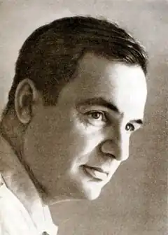

ОЛЕКСАНДР ПІДСУХА
(нар. 1918)
Олександр Михайлович Підсуха увійшов в українську літературу одночасно з такими письменниками-воїнами, як О. Гончар, Г. Тютюнник, П. Воронько та ін. Він народився 16 жовтня 1918р. в с. Ніжиловичах на Київщині в родині сільського коваля. Закінчивши семирічку в сусідньому селі, пішов на робітфак Київського лінгвістичного інституту, а за два роки був уже студентом Харківського педагогічного інституту іноземних мов. Після закінчення навчання О. Підсуха працює викладачем Донецького індустріального інституту (1939 — 1941). З 1941 по 1945 pp.—поет на фронтах Великої Вітчизняної війни. У післявоєнні роки викладав англійську мову в Київському педагогічному інституті ім. М. Горького. О. Підсуха з 1953 по 1958 pp. працював відповідальним редактором журналу "Дніпро", згодом — завідуючим редакцією серії "Романи й повісті" видавництва "Дніпро". З 1973 по 1979 pp. — він голова Товариства культурних зв'язків з українцями за кордоном. Ще у студентські роки О. Підсуха пробує своє перо. Перша поетична збірка "Солдати миру" вийшла друком 1948р. Тут найповніше виписано образ воїна-визволителя. З'являються книги "Життя за нас" (1950), "Слово про наших друзів" (1951). У 50—60-ті pp. відкривається О. Підсуха читачам як прозаїк. Поряд із ліричними збірками "Героїка" (1951), "Іду на клич" (1965), "Краплини" (1966), "Розповень" (1969) з'являється перша книжка прози "Віч-на-віч. Невигадані історії" (1962). Найпомітніше досягнення поета того періоду — віршований роман "Поліська трилогія" (1962). З кінця 1962р. за рекомендацією Спілки письменників О. Підсуха відряджається як стипендіат ЮНЕСКО до Канади, Англії, Франції, США. Наслідком подорожі за океан став цикл поезій "Канадський зошит", який ліг в основу збірки "Материн заповіт" (1964). Поема "Материн заповіт" (1962) ввійшла до однойменної збірки, що побачила світ в 1964р., стала одним з кращих творів в ліро-епічному жанрі. Вона заснована на автобіографічному матеріалі.